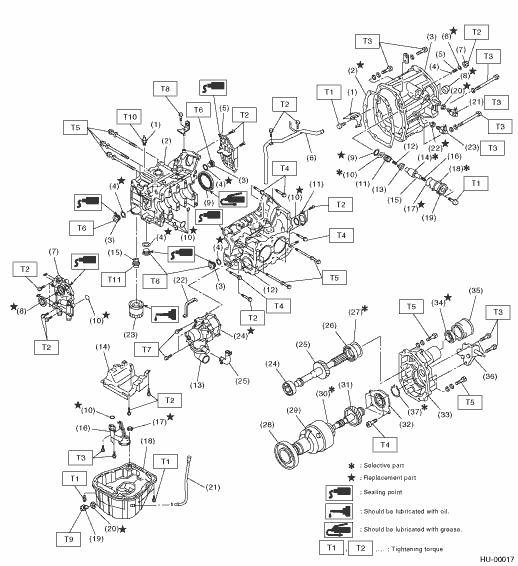
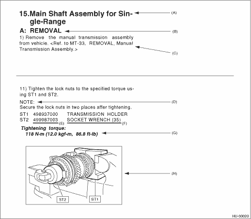

Each section consists of SCT that are broken down into SC that are divided into sections for each component. The specification, maintenance and other information for the components are included, and the diagnostic information has also been added where necessary.
The first page has an index with tabs.
Illustrations are provided for each component. The information necessary for repair work (tightening torque, grease up points, etc.) is described on these illustrations. Information is described using symbol. To order parts, refer to parts catalogue.
Example:

If necessary, specifications are also included.
Inspections to be carried out before and after maintenance are included.
• Maintenance instructions for serviceable parts describe work area and detailed step with illustration. It also describes the use of special tool, tightening torque, caution for each procedure.
• If many serviceable parts are included in one service procedure, appropriate reference is provided for each parts.
Example:

|
(A) |
Component |
(D) |
Cautions |
(G) |
Tightening torque |
|
(B) |
Process |
(E) |
Tool number of special tool |
(H) |
Illustration |
|
(C) |
Reference |
(F) |
Name of special tool |
Tables showing a step-by-step process make it easy to conduct diagnosis.
Measurements in these manuals are according to the SI units. Metric and yard/pound measurements are also included.
Example:
Tightening torque:
44 N·m (4.5 kgf-m, 33 ft-lb)